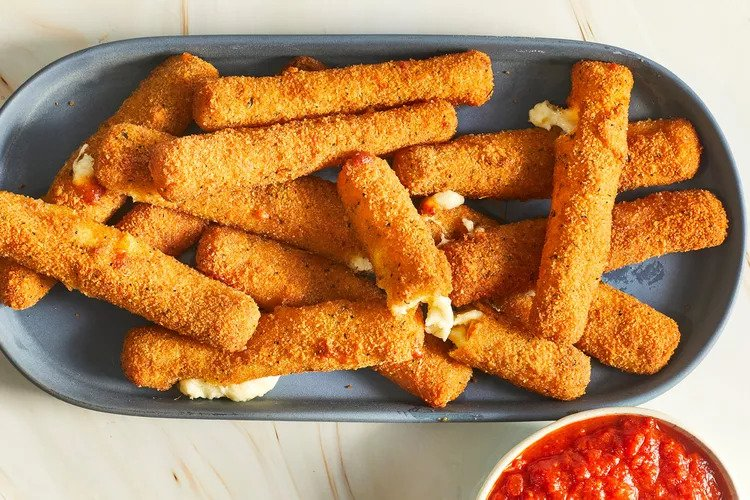

Fried Mozzarella Cheese Sticks

This is a recipe for mozzarella sticks.
- 2 large eggs, beaten
- 1/4 cup water
- 1 1/2 cups Italian seasoned bread crumbs
- 1/2 teaspoon garlic salt
- 2/3 cup all-purpose flour
- 1/3 cup cornstarch
- 2 cups oil for frying, or as needed
- 1 (16 ounce) package mozzarella cheese sticks
- Whisk water and eggs together in a small bowl. Mix bread crumbs and garlic salt
together in a medium bowl. Blend flour and cornstarch together in a third bowl.
- Heat oil to 365 degrees F (185 degrees C) in a large, heavy saucepan
- Dredge a mozzarella stick in flour; shake off excess. Dip into egg mixture.
Lift up so excess egg drips back in the bowl. Press into bread crumbs to coat.
Place breaded mozzarella stick on a plate or wire rack. Repeat with remaining
mozzarella sticks.
- Use a spider spoon or a pair of tongs to lower 3 to 4 mozzarella sticks into
the hot oil. Fry until golden brown, about 30 seconds. Remove from heat and drain
on paper towels. Repeat to fry remaning mozzarella sticks.